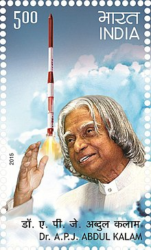

The Missile Man of India
The man behind the ballistic missile and launch vehicle technology.

APJ Abdul Kalam potrayed as missile man of India.
Here's glimpse of APJ Abdul Kalam's life:
- 1931 "- Born in Rameswaram, Tamil Nadu"
- 1954 " - Graduated from University of Madras in Physics"
- 1960 " - Aerospace Engineering from Madras Institute of Technology"
- 1960 " - Aeronautical Development Establishment of the Defence Research and Development Organisation as a scientist"
- 1969 " - Kalam was transferred to the Indian Space Research Organisation (ISRO) where he was the project director of India's first Satellite Launch Vehicle (SLV-III)"
- 1963 to 1964, " -he visited NASA's Langley Research Center in Hampton, Virginia; Goddard Space Flight Center in Greenbelt, Maryland; and Wallops Flight Facility"
- 1970 - 1990 " - He developed the Polar Satellite Launch Vehicle (PSLV) and SLV-III"
- 1970 " - Kalam also directed two projects, Project Devil and Project Valiant, which sought to develop ballistic missiles from the technology of the successful SLV programme"
- 1992-1999 " - Kalam served as the Chief Scientific Adviser to the Prime Minister and Secretary of the Defence Research and Development Organisation"
- 2002 - 2007 " - 11th President of India"
- 2012 " - Kalam launched a programme for the youth of India called the What Can I Give Movement, with a central theme of defeating corruption"
- 2015"- Kalam travelled to Shillong to deliver a lecture on "Creating a Livable Planet Earth" at the Indian Institute of Management Shillong. At around 6:35 p.m. IST, only five minutes into his lecture, he collapsed"
"Kalam's death is a great loss to the scientific community. He took India to great heights. He showed the way."
-- Indian Prime Minister Narendra Modi
"our country has lost a great human being who made phenomenal contributions to the promotion of self-reliance in defence technologies. I worked very closely with Dr. Kalam as prime minister and I greatly benefited from his advice as president of our country. His life and work will be remembered for generations to come."
-- Former Prime Minister of India Dr. Monomohan Singh
"a great personality and a gentleman"
-- ISRO chairman A. S. Kiran Kumar